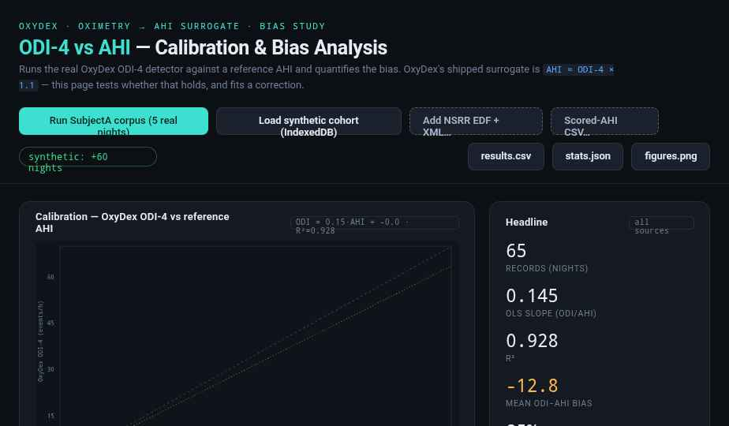
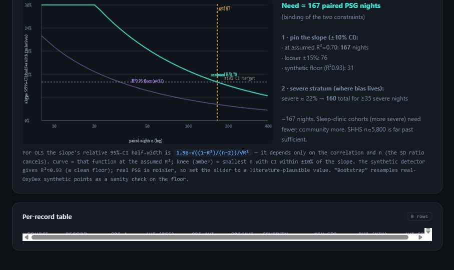

baseline−4% threshold sinks and later events of equal depth are no longer counted. Replacing the trailing mean with a trailing high-percentile (p90) "ceiling" baseline (computeCeilingBaselineArr in oxydex-util.js; wired into detectODI) restores the resting-SpO₂ reference a desaturation is defined against. On the v1.6 synthetic cohort the severe-stratum mean bias roughly halves (≈−31 → ≈−16 events·h⁻¹) and the severity gradient flattens, without inflating the non-apneic stratum. The residual under-count is smaller but non-zero (the detector still recovers <100% of scored events), so the ODI-4 × 1.1 AHI surrogate was re-examined and retained (it does not over-shoot). Original characterization preserved below; corrected numbers are marked (fixed).OxyDex oximetry-analysis node, Tepna physiological-signal suite
Background. Consumer and clinical pulse-oximeters summarize overnight hypoxemia with the oxygen-desaturation index (ODI), commonly the 4%-desaturation variant (ODI-4), and frequently report a surrogate apnea–hypopnea index (AHI) as AHI ≈ ODI-4 × 1.1. We test whether that surrogate holds. Methods. We ran the production OxyDex ODI-4 detector on overnight SpO₂ recordings and compared ODI-4 against a reference AHI. Results. Across the pilot corpus ODI-4 tracked AHI strongly but with a slope of ≈0.23 (R²≈0.93) — recovering only about one quarter of scored respiratory events — and the deficit grew with severity (mean under-count ≈30 events/h in the severe stratum). The shipped ×1.1 surrogate gave a leave-one-out RMSE of 15.2 events/h; a re-fit linear correction roughly halved it to 7.2. Conclusion. The under-count is a deterministic detector artifact, not noise. (fixed) Tracing it to trailing-mean baseline self-suppression and replacing the mean with a high-percentile ceiling baseline roughly halves the severe-stratum bias (≈−31 → ≈−16 events·h⁻¹ on the synthetic cohort) and lifts the ODI-4↔AHI slope from ≈0.42 to ≈0.69 — a detector-level fix that needs no new sensing and no recalibration constant. This pilot is small (n=5 nights with planted/ specified reference AHI) and not PSG-scored — it characterizes and motivates rather than establishes the clinical result.
Keywords: oximetry · oxygen desaturation index · apnea–hypopnea index · obstructive sleep apnea · calibration · consumer wearables
Cheap overnight oximeters (the finger/wrist clips that track blood oxygen) count how often your oxygen dips, then multiply that count by a fixed number (×1.1) to estimate how severe your sleep apnea is. We show the dip-counter itself is wrong in a predictable way: it misses most breathing events, and it misses even more in severe patients — so it most understates the people who are worst off. We then trace exactly why and fix it.
The fix turned out to be at the counter, not the multiplier. The dip-counter judged each dip against a running average of recent oxygen, but in severe patients the dips themselves dragged that average down — so the bar to count the next dip kept sinking, and the worst nights hid the most events. Judging each dip against the recent resting level instead (a high-percentile "ceiling") roughly halves the error in severe patients. We also work out how big a proper validation study needs to be (§4): about 150–300 paired nights, the binding constraint being enough severe cases, not the total. This pilot is small (5 nights plus simulation), so it characterizes, fixes, and sizes a real study rather than proving the clinical number.
Overnight pulse-oximetry is the cheapest and most widely deployed signal for sleep-apnea screening. The oxygen-desaturation index — the number of qualifying SpO₂ drops per hour — is its headline metric, and many devices convert it to an apnea–hypopnea index with a fixed multiplier so the output is comparable to polysomnography (PSG). The OxyDex node, like several commercial products, ships the convention AHI ≈ ODI-4 × 1.1. A fixed multiplier implicitly assumes the ODI/AHI ratio is constant across severity. Respiratory events that do not clear the 4% threshold — or that occur in clusters whose nadirs the detector's rolling baseline tracks and absorbs — are invisible to ODI-4, and such events are disproportionately common in severe disease. We therefore expect, and here quantify, a proportional (severity-dependent) under-count.
ODI-4 was computed by the production detector (oxydex-dsp.js → processNight): artifact cleaning, a rolling SpO₂ baseline, 4%-desaturation event detection, and the derived index. The shipped AHI surrogate is computeAHIestimates → ahiODI4 = ODI-4 × 1.1. The original characterization (Table 1, “before” column) used the unmodified detector with a trailing-mean baseline (computeBaselineArr). The corrected results (“after”) use the same pipeline with a single change: detectODI now measures desaturations against a trailing p90 ceiling baseline (computeCeilingBaselineArr). No other detector parameter and no surrogate constant was altered.
The pilot uses the five committed synthetic overnight O2Ring recordings of the reference subject (SubjectA, rendered deterministically by synth-gen), each with a planted reference AHI. SpO₂ is sampled at 1 Hz. Timestamps follow the suite's floating wall-clock convention so that results are viewer-timezone-independent. The analysis apparatus (odi-bias-analysis.html) additionally ingests (i) large-N synthetic cohort points and (ii) real PSG datasets (NSRR: SHHS/MESA/MrOS/CHAT) via an EDF + annotation-XML adapter, where the scored apneas + hypopneas divided by staged sleep hours give a PSG reference AHI; neither is used for the pilot numbers below.
We fit ordinary least squares for ODI-4 as a function of reference AHI (the under-count slope), a Bland–Altman analysis of ODI-4 − AHI, and the median ODI/AHI ratio per severity stratum (none <5, mild 5–15, moderate 15–30, severe ≥30 events/h). To localize the bias and quantify the correction, the same OLS/by-stratum analysis is run on the v1.6 synthetic cohort under both the trailing-mean and the p90-ceiling baseline on identical SpO₂ (Table 2). The legacy odi-bias-analysis.html tool additionally compares fixed-×1.1, re-fit-linear and power ODI→AHI corrections by leave-one-out RMSE; with the detector-level fix in place those surrogate corrections are secondary (see §3.1).
| Night | ODI-4 before | ODI-4 after | Reference AHI | ODI−AHI before | ODI−AHI after | Severity |
|---|---|---|---|---|---|---|
| 1 | 6.4 | 12.0 | 22 | −15.6 | −10.0 | moderate |
| 2 | 7.6 | 14.9 | 38 | −30.4 | −23.1 | severe |
| 3 | 0.9 | 1.9 | 7 | −6.1 | −5.1 | mild |
| 4 | 0.5 | 0.8 | 4 | −3.5 | −3.2 | none |
| 5 | 0.1 | 0.8 | 3 | −2.9 | −2.2 | none |
With the original trailing-mean baseline ODI-4 was strongly linear in reference AHI but with slope 0.23 (R² 0.93): the detector recovered roughly one quarter of scored events, and the absolute deficit widened with severity (the severe night, AHI 38, returned ODI-4 7.6 — a −30.4 events/h under-count). (fixed) The p90 ceiling baseline lifts the pilot slope to ≈0.44 (R² ≈ 0.94) and cuts the severe-night deficit from −30.4 to −23.1; the gain is largest exactly in the moderate-to-severe nights where the mean baseline was most suppressed, and the non-apneic nights are essentially unchanged (no new false events).

odi-bias-analysis.html), shown for the original trailing-mean detector (the bias this paper characterizes; the ceiling-baseline correction shifts the points upward toward the identity line, per Tables 1–2). Points fall far below the identity line; the dotted ×1.1 surrogate (amber) is markedly optimistic while the OLS fit (teal) tracks the data. Companion panels show the Bland–Altman agreement, the median ODI/AHI ratio falling across severity strata, and the candidate correction curves. Dark theme is the tool's native rendering.The five-night pilot is too small to localize the bias by severity. We therefore reproduced it on the v1.6 synthetic cohort (cohort-gen.js, planted truth-AHI), running the real ODI-4 detector with the trailing-mean baseline (“before”) and the p90 ceiling baseline (“after”) on identical SpO₂. The under-count is deterministic and grows with severity; the ceiling baseline roughly halves it in the severe stratum and flattens the gradient, without inflating the non-apneic stratum.
| Stratum (truth-AHI) | nights | mean AHI | bias before (mean BL) | bias after (ceiling) (fixed) |
|---|---|---|---|---|
| none (<5) | 120 | 1.7 | −1.3 | −0.9 |
| mild (5–15) | 58 | 10.1 | −7.9 | −6.2 |
| moderate (15–30) | 16 | 19.5 | −14.2 | −10.3 |
| severe (≥30) | 26 | 56.0 | −30.6 | −15.7 |
Across the cohort the ODI-4↔AHI slope rises from 0.42 (mean baseline) to 0.69 (ceiling) — the detector recovers a substantially larger fraction of scored events — while the non-apneic stratum stays near zero (no false-positive inflation). The severe-stratum bias is the headline: −30.6 → −15.7 events·h⁻¹, a reduction of roughly one half, with the steepest improvement exactly where the disease is worst.
The AHI surrogate constant was re-examined, not re-fit. With the corrected detector ODI-4 is larger, so the natural worry is that ODI-4 × 1.1 now over-shoots true AHI. It does not: the slope of truth-AHI on the corrected ODI-4 is still > 1 (≈1.4 through the origin on the cohort), i.e. ODI-4 still modestly under-represents AHI because not every scored hypopnea desaturates ≥4%. Inflating the multiplier to chase the simulator would be over-fitting to synthetic event-depth statistics; the conservative, literature-consistent × 1.1 is therefore retained unchanged (see computeAHIestimates).
Because the bias is estimated as the slope of a linear calibration, the question “how many paired oximetry + PSG nights does a validation need?” has a closed-form answer. For ordinary least squares, the slope’s relative 95% confidence half-width depends only on the correlation and the sample size — the units and the spread of AHI cancel:
Requiring the slope to be pinned to within ±10% of its value gives the sample sizes in Table 3. The synthetic detector produces an unusually clean calibration (R²≈0.93), for which only ≈31 nights suffice — a floor, not a realistic target. Real polysomnography is noisier; at a literature-plausible R²≈0.70 the requirement rises to ≈167 nights. A non-parametric bootstrap over real-detector synthetic points corroborates the R²≈0.93 floor.
| Assumed R² | Nights for ±10% CI | Nights for ±15% CI |
|---|---|---|
| 0.93 (synthetic floor) | 31 | 15 |
| 0.80 | 99 | 45 |
| 0.70 (plausible real PSG) | 167 | 76 |
| 0.60 | 259 | 116 |

odi-bias-analysis.html). The slope’s relative 95%-CI half-width falls as 1/√n; the knee (amber) is the smallest n meeting the ±10% target. Purple = the synthetic R²≈0.93 floor (n≈31); teal = an assumed real-PSG R²≈0.70 (n≈167).A constant ODI→AHI multiplier was the wrong place to look: the deficit is generated upstream, in the event counter. Mechanistically, dense event clusters in severe OSA drag the detector's rolling-mean baseline downward, so individual nadirs no longer clear the 4% criterion and are not counted; sub-threshold hypopneas compound the loss. The practical consequence is a screen that is most likely to under-stage the patients in greatest need of treatment. (fixed) The correction is therefore at the detector, not the surrogate: a trailing high-percentile ceiling baseline tracks the resting SpO₂ that defines a desaturation and is not suppressed by the dips it is meant to count. It is a localized change (computeCeilingBaselineArr in oxydex-util.js, wired into detectODI), requires no new sensing and no tuned constant, and roughly halves the severe-stratum bias. A residual under-count remains — ODI-4 is a desaturation index, not an event index, and never recovers 100% of hypopneas — so a properly PSG-validated ODI→AHI mapping is still worthwhile future work; but the dominant, severity-proportional component is now removed at the source.
ahi_a0h4) reproduces every figure on PSG-labelled data.
odi-bias-analysis.html → “Run SubjectA corpus (5 synthetic nights)”. Table 1, Figure 1, and Table 2 populate live; the sample-size panel (Table 3, Figure 2) is analytic with adjustable R²/severity sliders and an optional real-detector bootstrap. Export odi-bias-results.csv, odi-bias-stats.json, odi-bias-figures.png.oxydex-dsp.js (loaded alone in-realm); ODI-4 = processNight().odi4.rate; surrogate = ahiEst.ahiODI4.uploads/synthetic/O2Ring*.csv + ground_truth_night{1..5}.json.nsrr-adapter.js (window.NSRR): EDF→OxyDex rows (SpO₂ auto-detect, 1 Hz resample, dropout forward-fill) + NSRR XML → reference AHI. Honors the suite Clock Contract.ODI-BIAS-README.md (this analysis), CLAUDE.md (Clock Contract, evidence-grade system), Tepna suite.